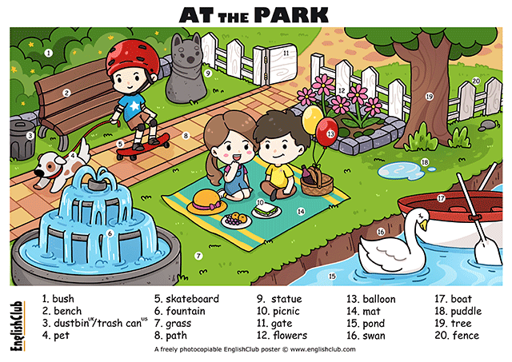

| wet adj. 湿淋淋的 |
|
|---|---|
| damp adj. 潮湿的 |
|
| moist adj. 润的;稍湿（给人感觉舒服，如湿润） |
|
| humid adj. 指气候湿热的 |
|
| put up = set up 搭建（强调搭，如搭个草棚等） |
|
|---|---|
| build 建（强调精心设计并且建造） |
|
| make 制造、整理 |
|
| in the middle of 在…当中，在…中间 | in the center of 在…中心，在…中部/中央 |
|---|---|
| 相对两边:既可以用于表示地理位置，又可以用于表示时间或在某个过程当中 | 相对四面:用于表示地理位置，腹地， 在陆地的腹地用 “center”后面只能接地点。 |
|
|
| /doing/n. 在…之后 | prep.（时间上）在…之前 |
|---|---|
|
|
| by 在…旁边 靠近 (不会紧挨着的, 但也不会很远，通常指距离非常近) |
|
|---|---|
| = 与…相邻 |
|
| next door 在隔壁 |
|
| near 在附近 |
|
| at 在…旁边 |
|
| on 靠近 | . |
| later 一段时间之后 | sometime 某个时间点 | 频率副词 |
|---|---|---|
|
|
|
| put out 人为的熄灭火 | be out 火自动熄灭 |
|---|---|
| I put out the fire. | The fire is out. |
| / begin to do 开始做某事 | / start to do 开始干某事 |
|---|---|
|
|
| put up with | 容忍，忍受 | I can’t believe that he can put up with this. |
|---|---|---|
| put up | 搭建，搭建； | They put up their tent in the middle of a field. |
| 安排住宿 为…提供膳宿，夜宿 | It’s raining heavily. We must put them up tonight.雨下得很大，我们今晚必须为他们安排住宿。 | |
| put out | 扑灭 |
|
| put on | 穿上 | I’m putting on my coat. |
| put away | 把…收好，放好 |
|
| put off | 推迟，拖延 |
|
| put down = write down | 记下，写下，记录下 | Have you put down the boss’s words? |
| 原型 (do) | 过去式 (did) | 过去分词 (done) |
|---|---|---|
| smell | smelled | smelled |
| smelt | smelt | |
| creep | crept | crept |
| sleep | slept | slept |
| wake | woke | woke |
| leap | leaped | leaped |
| leapt | leapt | |
| wind | wound | wound |
